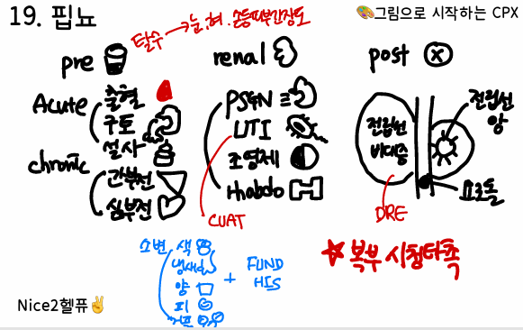
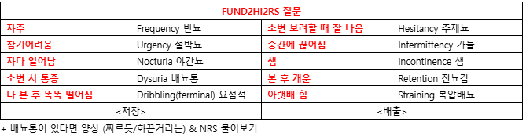

26. 소변량 변화(다뇨/핍뇨)
동반할 수 있어 원인 감별과 즉각적인 치료 중요
+ 체액 과다 -> Intrinsic/postrenal


원인 | |||||
다뇨 | 수분이뇨 | 수분섭취과다: 원발다음증 수분배설과다: 요붕증 | |||
| 용질이뇨 | 전해질배설증가: 이뇨제 비전해질배설증가: 당뇨병 | |||
핍뇨 | 콩팥 전 원인 | 혈량저하증 | |||
| 콩팥 내 원인 | 사구체 질환, 신독성 물질 | |||
| 콩팥 후 원인 | 방광출구 폐쇄 | |||
평가목표 1) 다뇨: 병력청취와 신체진찰로 원인인자를 구별하여 적절한 진단 및 치료계획 수립 -> 치료가 필요한 환자를 감별 2) 핍뇨: 핍뇨의 원인을 콩팥 전, 콩팥 내, 콩팥 후로 구분하고 적절한 응급치료계획을 수립할 | |||||
구체적인 성과 | |||||
병력 청취
| 다뇨와 빈뇨 구별 | 다뇨: 횟수와 일회 소변량 모두 증가 -> 소변의 양 3L 이상, 야간뇨 빈뇨: 횟수만 늘고 양은 적음 -> 하루 8번 이상 | |||
| 용질이뇨와 수분이뇨 구분 | 용질이뇨: 거품뇨, 최근 이뇨제 복용 수분이뇨: 다음/다갈 (DI, PP) | |||
| 다뇨와 관련된 질환 확인 | 당뇨병: 다음/다식 증상, 체중감소 요붕증: 야간뇨, 찬물 선호 고칼슘혈증/저칼륨혈증: 변비/근육에 힘빠짐 | |||
| 핍뇨와 무뇨 구별 | 핍뇨: 400-500ml 이하 무뇨: 100ml 이하 -> 급성 신부전이나 완전 폐쇄 시사하는 응급 상황 | |||
| 핍뇨의 특성과 동반증상을 파악해 원인 감별 | 양상: 소변의 색/냄새, 거품/피 동반 비뇨: FUND-HISR | |||
| 콩팥 전/내/후 수준별 증상 감별 | 전: 설사/구토/출혈(토혈,혈변) 내: 조영제 사용, 약(NSAIDs, 항생제), 소변 콜라색, 근육통, 감기증상 후: 소변 가늘어짐, 잔뇨감, 하복부/옆구리 통증 | |||
| 콩팥기능 상실의 위험요인이나 악화요인 확인 | 고혈압, 당뇨, 신질환 가족력, 최근 수술력 전신 증상, 탈수/요독 증상 | |||
신체 진찰 | 체중감소와 탈수 정도 확인 감별이 필요한 질환 확인 | V/S 확인 - 입(탈수) - 사지(피부긴장도) 중추 DI) 눈(빈혈, 시야검사) 당뇨) 안저검사 | |||
| 혈량상태 평가 비뇨생식기 진찰로 원인 감별 방광출구 폐색 여부 구별 | V/S 확인 - 눈(빈혈) - 입(탈수) - 사지(피부긴장도, 부종) 흉부: 호흡음, 심음 청진 복부: 하복부 방광 비대 여부 CVAT DRE | |||
진단 및 치료 | 다뇨 1. 용질이뇨와 수분이뇨 구분 검사 2. 다뇨와 관련된 진단계획 수립 3. 탈수 및 전해질 이상에 대한 응급조치 4. 전문 진료가 필요한 환자 감별 | 핍뇨 1. 원인질환 감별 위한 진단계획 수립 2. 원인에 따른 치료계획 수립 3. 도뇨관 삽입, 투석 등 응급치료가 필요한 환자 치료
| |||
| 요삼투압 확인 -> 300 초과시 용질이뇨 -> 혈당, BUN/Cr, 약물력 -> 250-300 미만 시 수분이뇨 -> 수분제한검사 | 신기능 상실의 위치 감별 -> BUN/Cr, 전해질, FENa FENa <1%: prerenal(신장 정상) / >2%: intrinsic(ATN, 신독성) 영상검사: 신초음파로 수신증 확인 - postrenal | |||
| 심한 탈수 시 등장성 식염수로 혈류량 회복 고Na 동반된 경우 뇌부종 주의하며 교정 뇌하수체 종양(중추성 DI), 심한 전해질이상 시 의뢰 | Prerenal: 수액공급 Postrenal: 폐쇄 원인 제거 -> 도뇨관 삽임 긴급 투석 적응증 (AEIOU 공식) Acidosis: 약물로 조절 안 되는 대사성 산증 Electrolytes: 심각한 고칼륨혈증 (K > 6.5 or EKG 변화) Intoxication: 투석으로 제거 가능한 약물 중독 Overload: 이뇨제에 반응 없는 폐부종(Pulmonary edema) Uremia: 요독성 심낭염, 뇌증 등 | |||
환자교육 | 다뇨 = 불편함 | 탈수 예방법: 적절한 수분 보충, 탈수 증상/징후 관찰, 악화 요인 차단(커피/술) | |||
| 핍뇨 = 응급 | 응급조치 교육: 몇시간 동안 소변이 아예 안나올 경우 바로 응급실 소변이 안나올 때 물 많이 마시면 폐에 물이 찰 수 있으니 주의 | |||
| PPI | 불안 배려 투석 등 장기치료 필요한 경우에도 환자의 자기 결정권 존중 | |||
질환 | 질환 설명 | 병력청취 | 신체진찰 | 검사 | 치료 | |
다뇨 | ||||||
수분 이뇨 | 중추성 요붕증 | 뇌에서 수분을 잡아주는 H 잘 생성 안되거나 안나옴 | 야뇨, 갈증, 다음, 빈뇨 동반 뇌수술력/두부위상/시야장애 | 탈수 징후 있을 수 있음 | 24시간 소변량, 소변 삼투질농도, 혈청 AVP, 뇌 CT/MRI | 약뭋치료:DDAVP(중추성) 수술적 치료 |
| 신성 요붕증 1 | 호르몬 정상이지만 신장이 반응안함 | 야뇨, 갈증. 다음 동반 리튬/비뇨기질환 | 탈수 징후 있을 수 있음 | 24시간 소변량, 소변 삼투질농도, 혈청 AVP, 뇌 CT/MRI | 이뇨제(신장성) 수분 섭취 |
| 원발성 다음증 | 습관적으로 물을 너무 많이 마셔서 다뇨 | 야뇨 동반 의식적인 다음 | - | 24시간 소변량, 소변 삼투질농도, 혈청 AVP, 뇌 CT/MRI | 수분 제한 |
용질 이뇨 | 당뇨병 7+2 | 혈당이 높아 소변에 당이 섞여 물을 끌고나감 | 체중 감소, 다음, 다갈 동반 | - | 혈당검사, 당화혈색소, 2시간 식후혈당검사 | 생활습관 개선, 경구혈당강하제, 인슐린 등 |
| 이뇨제/ 커피 | 콩팥에서 수분흡수를 억제 | 이뇨제/커피/녹차 | - | 전해질검사, 소변검사 | 약물 복용 중단 |
기타 | 만성 신부전 | 콩팥이상 농축기능감소 묽은 소변 | 고혈압, 당뇨, 피로, 가려움증, | 부종 | BUN/Cr, 전해질검사, 소변검사 | ACEi, ARB, 혈액투석, 복막투석 |
| 요로감염 | 세균 때문에 방광에 염증생겨 계속 자극됨 | 배뇨통, 질분비물 | 외성기진찰, 골반진찰 | 소변검사, 소변배양검사, CBC | Ciprofloxacin, Ampicillin |
| 폐쇄 후 이뇨 | 막혀있던 소변길이 풀리면 몸에 쌓였던 물/노폐물 한번에 | 도뇨관 삽입력 | - | 소변검사, 소변배양검사 | 경과관찰 |
| 생리적 다뇨 |
| 일 소변량 3L 미만 | - | - | 수분 제한 |
핍뇨 | ||||||
신전성 탈수+핍뇨 | 저혈량증 (빈혈/탈수) 2+1 | 피나 수분이 부족해 콩팥피↓ | 설사, 구토, 혈변, 흑색변, 어지럼 | 탈수 소견 | 소변검사, 전해질검사, CBC | 수액 공급 |
| 울혈성 심부전 | 심장 약해 콩팥으로 피 못보냄 | 부종, 피로, 호흡곤란. 심장질환 과거력 | 흉부청진-수포음 | 심전도, 심초음파, 흉부 X선 검사 | 이뇨제, ACEi, BB 등 |
| 약물로 인한 신손상 | 콩팥에 들어오는 혈류량 조절 | 항고혈압제, 진통제 약물력 | - | 소변검사, BUN/Cr, 신장초음파 | 약물 중단 및 교체, 수액 공급 |
신성 | 약물로 인한 신손상 3+1 | 콩팥을 손상 | 조영제, 항생제, 진통제의 약물력 | 하지 오목 부종 | 소변검사, BUN/Cr | 약물 중단 및 교체, 수액 공급 |
| 횡문근 융해증 | 근육손상시 나온 독성물질이 콩팥을 손상 | 격한 운동 후 발생한 핍뇨 적색뇨, 근육통 동반 | - | 혈청 CK, 소변검사, BUN/Cr | 수액 공급, 이뇨제 |
| 감염 후 토리콩팥염 (PSGN) | 감염 뒤 면역반응으로 콩팥 미세혈관 피를 걸러 소변을 만드는 통로 손상 | 상기도 감염 후 1-3주가 지나 발생한 핍뇨 및 혈뇨 | CVAT(+) 하지 오목 부종 | 혈청 ASO, 소변검사, BUN/Cr, 신장 초음파 | 수액 공급, 이뇨제 |
| 용혈요독 증후군 | 장내 세균 독소로 적혈구가 깨짐, 부서진 조각과 염증반응으로 콩팥의 작은 혈관 막힘 | 소아 환자 혈성 설사 후 1-2주가 지나 발생한 핍뇨 및 혈뇨 황달, 피로, 출혈경향성 동반 | 탈수 소견 | 소변검사, PBS, 대변배양검사 | 수액 공급, 이뇨제 심하면 혈액투석 |
| 악성 고혈압 | 혈압이 너무 높아 콩팥 혈관이 손상 | 고혈압의 병력 및 매우 높은 혈압 시력 저하, 두통 동반 | 시신경유두부종 , 망막출혈
| 소변검사, 흉부 X선 사진, 뇌CT/MRI | BB, CCB 등을 통한 혈압 조절 |
| 이식 거부반응 | 신장 이식 후 거부반응 | 신장 이식 환자 | 하지 오목부종 | 소변 검사, BUN/Cr, 신장초음파, 신장생검 | 면역억제제 강화 |
신후성 | 방광 출구 폐쇄 | 소변길을 막아서 핍뇨 | 도뇨관 삽입력 및 하부 요로 외상력 | 하복부 덩이 촉지 (남자) DRE에서 전립선 비대 소견 가능 | 도뇨관 삽입 시도, 신장/방광초음파, 신장 CT/MRI | 도뇨관 삽입 및 원인 질환에 맞는 치료 |
| BPH/ 전립선암 | 전립선이 커져 소변길을 막음 | 전립샘 비대증, 요도 협착, 아랫배 통증 | 방광 부위 통증 | 직장 경유 초음파 촬영, 신장 초음파, PSA | 알파 차단제, 안드로겐 억제제, 도뇨관 삽입, 수술 |
O | 언제부터 소변량이 변했나요? 갑자기/서서히? | |
L | - | |
D | 하루에 소변 몇번 보나요? -> 이전에는 소변 몇번 보나요? | |
Co | 점점 더 심해지나요? | |
Ex | 이전에도 이런 적 있으셨나요? 치료? | |
C | [양상] 양(종이컵)/색/냄새/거품/피 [정도] 일상생활 + 통증 NRS | |
A | open Q 전신) 발열/오한/체중감소/피로 탈수) 두근거림/어지럼/호흡곤란/갈증 비뇨) 빈뇨/절박뇨/야간뇨/배뇨통+주저뇨/가늘어짐/복압배뇨/잔뇨감  | |
| 다뇨 | 핍뇨 |
| 원발 다음) 갈증이 안나도 물을 마시나요? 중추성 요붕증) 두통/시야장애/근력 저하
| 신전성-소화기계/탈수,출혈) ANVCD+토혈/혈변 신성) (PSGN) 감기증상/(랍도)심한운동/근육통/사우나 신후성) 하복부/옆구리 통증 요독증) 구역/구토/가려움증 |
F | 하루에 물을 얼마나 마시나요? | |
E | 마지막 건강검진? 당뇨검사? | |
외 | 최근에 머리를 다친적? r/o 중추성 요붕증 뇌수술 받은적? | 요도를 다친적? 요도 카테터 삽입한 적? r/o 방광출구폐쇄 요도 수술 받은적 최근 조영제를 사용한 검사 진행? r/o 약물로 인한 신손상 신장 이식 받은 적? r/o 이식 거부반응 |
과 | 이전에 진단받은 병이 있나요? -> 당뇨/신질환/심질환 | 이전에 진단받은 병이 있나요? -> 당뇨/신질환/심질환 신경과나 정신과 진료? -> 리튬 등 복용 |
약 | 복용중인 약물? -> 이뇨제/리튬/고혈압약 | 복용중인 약물? -> 진통제/고혈압약/항생제 |
사 | 기본: 음주/흡연/직업/커피(카페인)/스트레스 식습관) 짠 음식을 자주 드시나요? 하루에 물을 얼마나 드시나요? 최근에 마시는 양이 변했나요? | |
가 | 비슷한 증상 당뇨병/신질환 | |
PEx | V/S 확인 (혈압, 맥박, 호흡수, 체온) 1 눈: 빈혈 + 다뇨에서 시야검사 2 입: 탈수 3 목: 경부 림프절 촉진 4 사지: 피부긴장도, 부종 5 흉부: 핍뇨일때 호흡음/심음 청진 -r/o 폐부종 6 복부: 시청타촉 - 종괴 유무, 신동맥 Bruit, 방광 비대, suprapubic Td CVAT 7 DRE + 골반진찰/외성기진찰 언급 | |
진단 | 공감/안심) 갑자기 이런 증상이 나타나서 불편하고 걱정 많으셨겠습니다. 추정진단) 지금까지 문진과 신체검진 결과를 종합해 보았을 때 ~~가 의심됩니다. 기전설명) 해당 질환은 ~~ 으로 해당 증상이 나타날 수 있습니다. 감별진단) 하지만 이 외에도 ~~등의 질환도 배제할 수 없어 추가적인 검사가 필요합니다. | |
검사, 치료 | 기본 검사 | 다뇨: 혈액검사(신장기능검사- BUN/Cr), 혈당검사, 요삼투압검사, 수분제한검사 + 뇌영상검사 핍뇨: 혈액검사(신장기능검사- BUN/Cr), 전해질검사, 소변검사, 신초음파 |
| 치료 | 다뇨 [원발다음증] 습관적으로 물을 많이 마시는 게 원인이므로, 수분 섭취를 제한 [중추요붕증] 부족한 호르몬을 대신하는 약 소변감소 [신장성 요붕증] 특정 이뇨제로 콩팥 반응을 조절해 소변감소 +) 충분한 수분 섭취+저염/저단백 식이
핍뇨 약물로 인한 신손상: 약물 중단 및 수액 공 [용혈요독} 혈액투석/수혈 -> 혈액투석으로 노폐물을 빼주고, 적혈구가 많이 깨졌을 때는 수혈 [횡문근] 수액공급+이뇨제 |
교육 | (안심/회피,교정/응급)
[다뇨] 회피,교정) 생활습관 개선; 저염식/저단백/카페인,녹차줄이기 배뇨습관 교육: 소변 본 이후에 10-15분 후 다시 한번 보러가는 것도 도움이 될 수 있다. 응급) 탈수 위험성 교육: 어지럼/두근거림 등의 탈수 증상이 나타나면 즉시 수액 공급이 필요할 수 있기에 이런 증상에 주의
[핍뇨] 회피,교정) 약물 위험성 교육: 현재 복용 약물이 신독성이 있는 약이기이에 피하는 것이 좋습니다. 배뇨습관 교육: 배뇨일지 작성이 필요할 수 있다. 3일간 배뇨시간/양/횟수/수분섭취량 기록 - 소변을 보는 패턴 확인 & 더 정확한 원인 파악 가능 응급) 몇시간 동안 소변이 아예 안나올 경우 바로 응급실. 소변이 안나올 때 물 많이 마시면 폐에 물이 찰 수 있으니 주의 탈수 위험성 교육: 어지럼/두근거림 등의 탈수 증상이 나타나면 즉시 수액 공급이 필요할 수 있기에 이런 증상에 주의 | |
[당뇨병]
안심) 당뇨병은 일찍 치료할수록 예후가 좋은 병입니다. 증상이 있을 때 병원에 잘 오셨습니다.
회피/교정) 당뇨가 더욱 악화되지 않기 위해서는 약을 먹는 것도 중요하지만 생활습관을 바꾸는 것도 중요합니다. 먼저 식후 1시간 뒤에 유산소 운동을 해서 혈당 스파이크를 잡고, 너무 단 것을 먹지 말고 일정한 양의 음식을 골고루 먹는 것이 중요합니다.
검진) 또한 혈당측정기를 구매하셔서 매일 혈당을 측정하고 기록해오시면 치료 계획을 잡는 데 도움이 됩니다.
응급) 당뇨 환자들은 갑자기 식은땀이 나고 어지러울 수 있습니다. 약물로 인해 저혈당이 생긴 것인데, 이런 경우를 대비해서 빠르게 당을 올릴 수 있는 사탕 3-4개 정도 가지고 다니시다가 증상이 나타나면 곧바로 섭취하는 게 좋습니다.